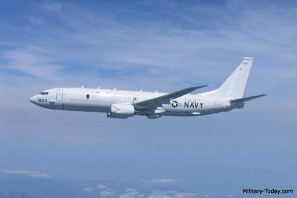
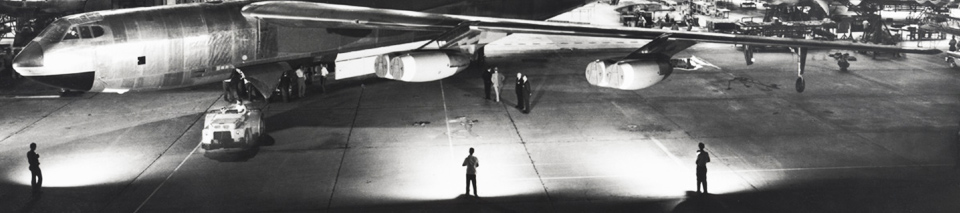

The C-17's ability to fly long distances and land in remote airfields in rough, land-locked regions make it a premier transporter for military, humanitarian and peacekeeping missions.
Careers in India
Boeing gives you the chance to work with many of the world's pre-eminent experts in aerospace and advanced technology – and be a part of an important and growing industry. View current open job opportunities in India.
737 MAX
The 737 MAX optimizes the market-leading strengths of the highly successful Next-Generation 737 to assure operators of competitive success far into the future.
Five Boeing P-8I Maritime Patrol Aircraft Delivered to Indian Navy

Boeing has delivered five P-8I long-range maritime reconnaissance and anti-submarine warfare aircraft to the Indian Navy in 2013, with one more aircraft delivery expected in 2014 and two deliveries expected in 2015. Boeing is building eight P-8I aircraft for the Indian Navy as part of a contract awarded in january 2009.
The first P-8I aircraft arrived on schedule at India Naval Station Rajali on May 15, 2013 and the subsequent aircraft that were delivered have joined the Indian Navy's fleet, enhancing India's long-range maritime reconnaissance and anti-submarine warfare capabilities.
Based on the company's Next-Generation 737 commercial airplane, the P-8I is the Indian Navy variant of the P-8A Poseidon that Boeing has developed for the U.S. Navy.
Customers
Air India has been a Boeing customer since 1960, when it acquired the 707 jetliner. By 1962, Air India had earned the distinction of becoming the world’s first all jet airline. The 707 allowed Air India to quickly expand its network overseas. Since then, India’s international flag carrier has continued to enlarge its fleet with Boeing airplanes such as the 787 Dreamliner, the 777 200LR, 777-300ER and Next-Generation 737-800.
History

The close relationship between Boeing and India goes back approximately 70 years, when Tata Airlines flew DC-3s. India entered the jet age on the wings of Boeing commercial jetliners. Boeing jets continue to be the mainstay of the country’s domestic and intercontinental commercial fleets.
In addition, Boeing is focused on creating sustainable value in the Indian aerospace sector. The company has developed important relationships with suppliers in India and is actively pursuing technical and business partnerships with Indian companies and institutions. Boeing is uniquely positioned for growth in the burgeoning aircraft services and support market.
New opportunities for partnership have emerged in the area of defense, Indian industry and technology. In January 2009, the government of India selected the P-8I to fulfill its long-range maritime reconnaissance and antisubmarine requirements. In March 2009, Boeing opened the Boeing Research & Technology center in Bangalore to advance aerospace innovation. Recently, in June 2011, India’s Ministry of Defence signed an agreement with the U.S. government to acquire 10 Boeing C-17 Globemaster III airlifters.